Timing tools
Small commands that save you from typing numbers and from doing work twice: copy the times of one clip onto another, split an animation block, say how new clips come in, give a clip a formula of its own, and copy how a clip looks onto others.
Most of these live in the menu of a clip, so that is where this page starts.
The menus of a clip and of several clips
Right-click a clip on the timeline, or press Shift+F10 with the focus on it, and its menu opens. Its first entries add animations at the playhead, or where you clicked when the playhead is not on the clip; the rest are about the clip itself.
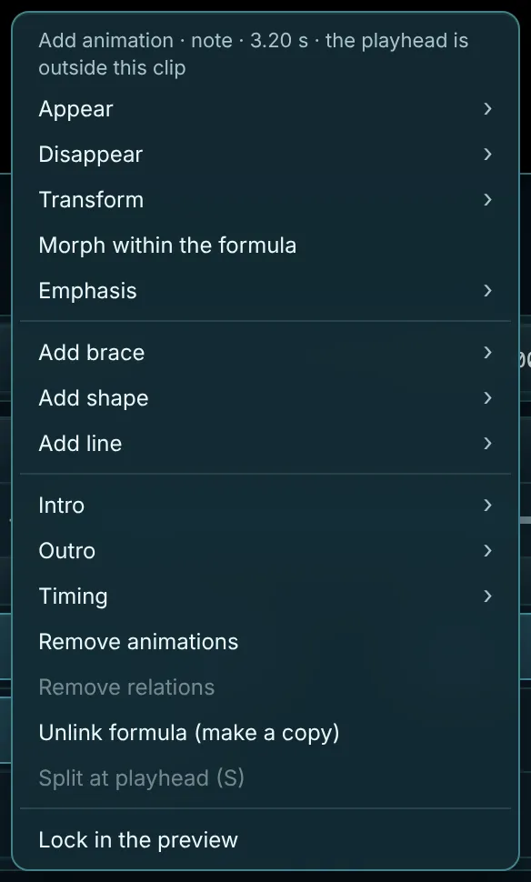
| Entry | What it does |
|---|---|
| Appear, Disappear, Transform, Morph within the formula, Emphasis | Add an animation block to the clip at the playhead, or where you right-clicked when the playhead is not on the clip (the Animations panel adds one at the playhead). See Animation blocks. |
| Add brace, Add shape, Add line | Hang a new object on the clip. See Braces, Shapes and Lines and arrows. |
| Intro, Outro | Give the clip the animation it starts or ends with. See Appearing and disappearing. |
| Timing | Copy the clip's times, or paste times copied from another clip. See below. |
| Remove animations | Take off the intro, the outro and every block but the Morph ones, in one step. |
| Remove relations | Formulas and texts only: take off the clip's transformations of glyphs, that is its relations with other clips and its Morph blocks. A relation whose other clip is on a locked track stays, and a notice says so. |
| Unlink formula (make a copy) | Give the clip a copy of its formula of its own. See below. |
| Lock in the preview | Make the Preview leave that formula alone, so that something under it can be reached. The timeline and the panels still edit it, and the lock is saved with the project (Placing things in the Preview). |
A brace, a shape or a line has fewer entries and some of its own (a colour, a direction, Detach, Become): they are on the pages of those objects. The Preview has a menu of its own for a clip. It shares Intro, Outro, Remove animations, Remove relations and Unlink formula (make a copy) with the timeline's, and adds the entries for copying properties (below), aligning, match colors and colours in order.
Several clips
With several clips selected, right-click one of them: the menu is of the whole selection. Its first line says how many clips and how many formulas they are.
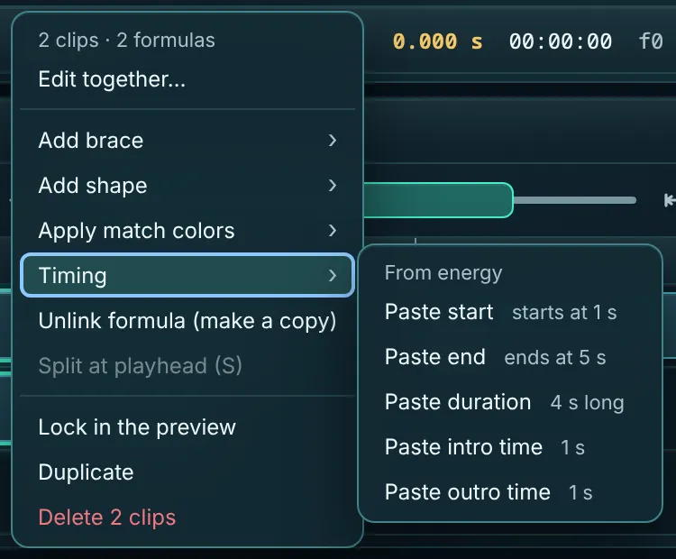
energy: the pastes, and no copy.| Entry | What it does |
|---|---|
| Edit… or Edit together… | Open the formula, when the clips are of one; or open the formulas together, with one scale and one match list for all of them (Finding and organizing). |
| Add brace, Add shape | One brace over them all, or one shape around them all. They are greyed out, with the reason as a tooltip, when the clips are never on screen together from the playhead on. |
| Apply match colors | Colour their formulas by one of the project's match lists (Match colors). |
| Timing | Paste a part of the copied timing onto all of them. There is no copy here: copying is of one clip. |
| Unlink formula (make a copy) | Give each formula among them a copy of its own, shared by its selected clips. |
| Lock in the preview | Lock them all, or unlock them all when they are all locked. |
| Duplicate, Delete | Copy or delete the clips (not their formulas), as Ctrl+D and Delete do. Clips on locked tracks are left out, and the entry says so. |
Copying and pasting the timing
To make two clips start together, last the same, or have intros of the same length, copy the timing of one and paste it onto the other. It is all in the Timing entry of the clip's menu, which opens a small menu beside it.
- Right-click the clip to copy from and choose Timing ▸ Copy timing. The
entry shows its times, such as
1 s–5 s. One copy takes the start, the end and the lengths of the intro and of the outro. A clip on a locked track can be copied from too: a copy changes nothing. - Right-click the clip to change, or select several, and choose what to paste.
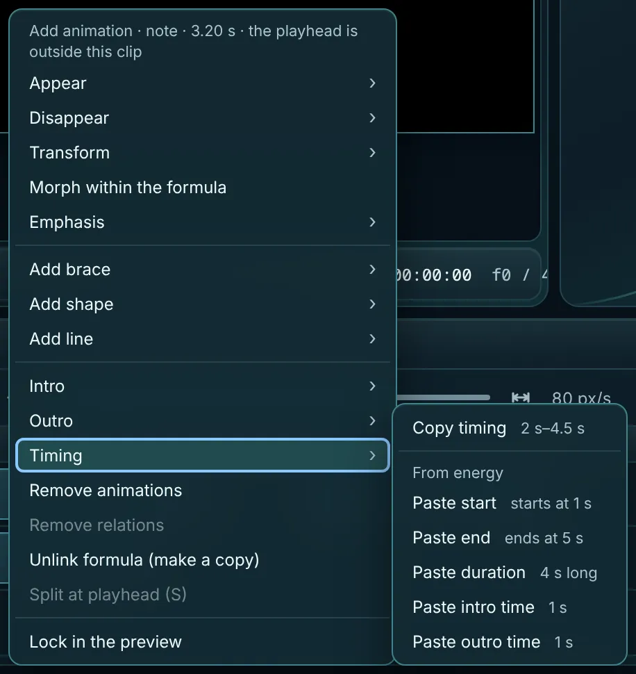
energy, each paste entry says what it
would paste. A line names the clip they come from.| Entry | What the clip gets |
|---|---|
| Paste start | It starts when the copied clip does, and keeps its length: the two clips are aligned on their left edge. |
| Paste end | It ends when the copied clip does, and keeps its length: aligned on their right edge. |
| Paste duration | It lasts as long as the copied clip, from where it starts. |
| Paste intro time | Its intro lasts as long as the copied clip's intro. Off, saying it has no intro, when the copied clip has none. |
| Paste outro time | Its outro lasts as long as the copied clip's outro. |
Each paste is one undo step: Ctrl+Z puts the clip back as it was.
A paste does what it says, or nothing
Where a drag would stop, a paste stops too: the clip stays as it is, and a notice says why. That happens when
- another clip of the track is in the way (the notice names it and its times);
- the track is locked;
- the new length would cut an animation block or a relation of the clip, or the new intro would run into a keyframe;
- the window of a relation whose other clip is on a locked track would no longer fit in the clip: such a relation stays where it plays;
- a clip would start before 0, or be shorter than its intro and its outro, or longer than the room it has.
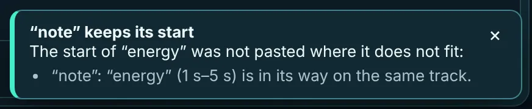
note is on the track of energy: it
cannot start where energy does.A paste never cuts anything: a clip made shorter than its blocks or its relations reach stays as it was. Onto several clips a paste applies to each in turn, in the order of the timeline, each planned where the ones before it left things; the ones that fit change, in one undo step, and the notice names the ones that stay.
Split
An animation block animates glyphs, and Manim cannot run two animations on one glyph at the same time. But two blocks may run at once on different glyphs: the two sides of an equation, written at the same time. Splitting a block makes that from the block you have: one block per part, all at the same time and of the same length, each with its own animation and its own glyphs.
Splitting is offered on the blocks that name glyphs: Appear, Disappear, a Transform of part of the formula and Emphasis. A block of an arrow is not split: it takes the whole arrow. Right-click the block:
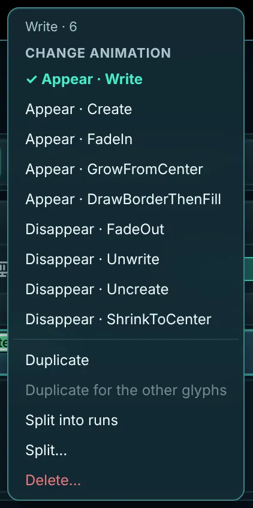
=, is on screen
already, so an Appear has nothing to bring in for it.- Split into runs makes one block per run of consecutive glyphs
the block animates: with the glyphs 0, 1, 2 and 4, 5, 6 it makes two. It is the quickest way to
animate the two sides of an equation together, since the
=between them is a gap. It is off when the block's glyphs make a single run. - Split… opens a dialog where you choose which glyphs go to new blocks.
- Duplicate for the other glyphs puts a copy of the block beside it for the glyphs it does not animate. It is off when there are none.
The Split dialog
Choose the glyphs that go to one new block and press Split; the others stay in the block you split. For several new blocks, choose the glyphs of the first, press Another block (it is listed under the formula, tinted like its glyphs, and a × gives its glyphs back), and choose those of the next. A glyph is in one block only, so what you choose again is taken from the block that had it. The dialog can be resized from its corner or maximized, and it keeps its size for the session: the room it gains goes to the formula.
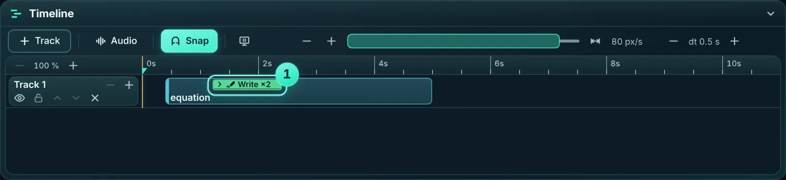
What a split leaves
The new blocks are a group, like Manim's AnimationGroup: they start
together and last the same, each keeping its own animation, glyphs and options, and the timeline
draws them as one block on one lane (Write ×2, or Group ×2 when their animations
differ), so a block split in ten does not take ten lanes. A group moves and stretches as one
block; its arrow, or a double-click, unfolds it into its blocks, and the arrow on the first of
them folds it back. A split is one undo step, and what plays does not change: the two players
above are the same scene. In the export, one animation over all the glyphs becomes one
animation for each part, side by side in the same self.play:
self.play(Write(VGroup(*equation_g[:3], *equation_g[4:])), run_time=1.2)self.play(Write(VGroup(*equation_g[:3])),
Write(VGroup(*equation_g[4:])), run_time=1.2)To give the right side another animation, unfold the group and change that block's animation from its menu. Groups have their own page: Groups of animation blocks.
Appears with
Appears with is a field of the formula editor (double-click a formula in the Creator, or press Enter on its card). It is the intro every new clip of that formula starts with, and its length.
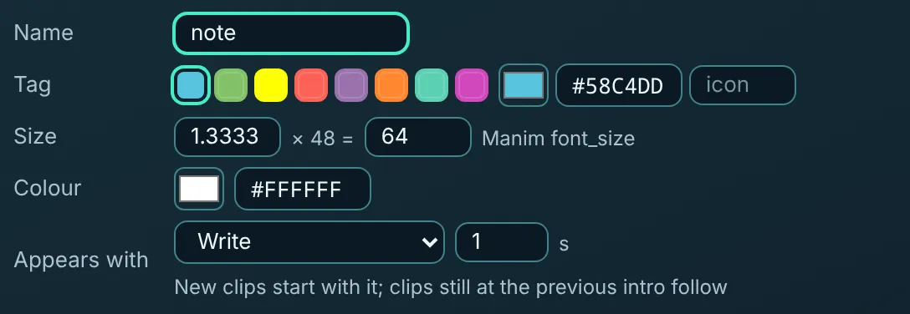
The list holds Default (written Default (none) or Default (Write), following the Always add intro preference of the Edit menu, and Default (none) on an object that does not take the intro of that preference: a line is never grown, for one), None (appear) and every intro the object takes, GrowArrow among them for an arrow. A length field appears next to a real animation.
What it changes
- New clips of the formula, from a drop on the timeline or from Add to the timeline, start with it.
- Clips already there that still have the previous intro (the same kind and the same length) follow the change, each as far as its blocks, its outgoing relations and its outro leave room. A clip you retouched in the Animations panel, or from its menu, keeps its own, and so does a clip on a locked track, which a notice counts.
- It also goes the other way: an intro you give a clip from the menu entry Intro becomes what Appears with says from then on. The formula's other clips stay as they are.
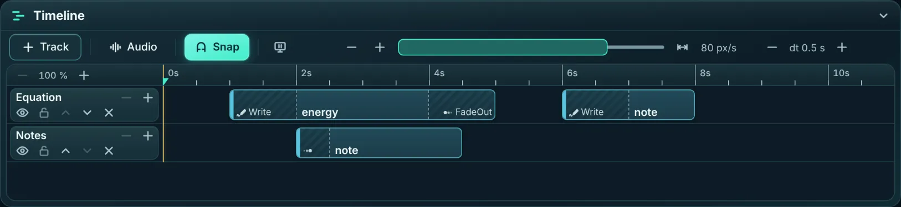
note: its
clip over 6–8 s, which had no intro, now writes in; the clip over 2–4.5 s, which had its own
FadeIn, kept it.The composition editor of a LaTeX text has the same field. What intros there are, and the preference behind Default, are on Appearing and disappearing.
Unlinking a formula
A formula on the timeline more than once is one object: change its LaTeX, its size or its colour and every clip shows it. That is what you want until you do not. Unlink formula (make a copy) gives one clip a copy of the formula of its own, so that editing either no longer changes the clips of the other.
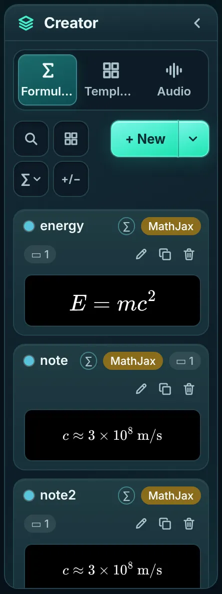
note has two clips. Unlinking the one on Notes gave it
note2, right after the original in the Creator; the clip changes name, and the
other keeps note.- The copy is made as Duplicate makes it in the Creator: under the next free
name (
notebecomesnote2), right after the original in the list and in its group. - The clip keeps everything it had: its blocks, its colours, its relations as source or as target, the objects hung on it or on its glyphs, and the glyphs picked on it. The copy has the same glyphs, so the Preview does not change. One undo step brings the clip back to the original and removes the copy.
- With several clips selected, the selected clips of each formula share one copy; among clips of several formulas the entry reads Unlink formulas (make 3 copies), or however many.
The entry is off, and its tooltip says why, for a formula's only clip (there is nothing to unlink it from), when all the clips of a formula are selected together, and on a locked track: a selected clip on a locked track keeps its formula, and a notice says so. Braces, shapes and lines have no such entry: they live with their clips.
Copying and pasting properties
To make one formula look and sit like another, copy its properties and paste them. This is done in the Preview, on the clips of the scene at the playhead. Copy properties takes the state of one clip as it is shown at the playhead: its position, scale, rotation, flips, opacity, colour and the colours of its glyphs. A paste is one undo step.
- Right-click the clip in the Preview and choose Copy properties. The clip under the pointer is the one copied.
- Select the clips to change (Ctrl or Shift and a click, or a rectangle), right-click one of them and open Paste properties.
- Edit ▸ Copy properties, which wants exactly one clip selected, and Edit ▸ Paste properties do the same.
- With two or more clips selected, a bar in the top-left corner of the Preview has Paste properties as a small menu next to the align keys.
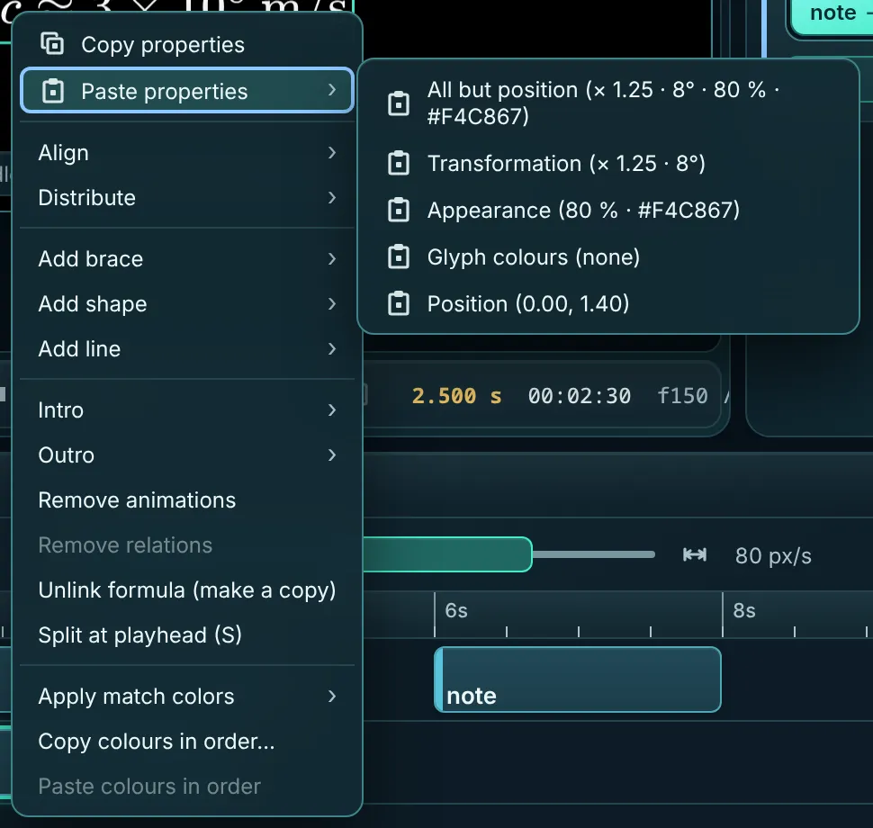
energy, scaled ×1.25, turned 8°, at 80 % opacity and
yellow: each entry shows what it would paste.| Entry | What it pastes |
|---|---|
| All but position | The transformation, the appearance and the glyph colours below. |
| Transformation | Scale, rotation and flips. |
| Appearance | Opacity and colour. |
| Glyph colours | The colours of single glyphs, onto clips of the same formula only, since they go by glyph. |
| Position | The place on the frame. Pasted onto several clips it stacks them on one point, on purpose. |
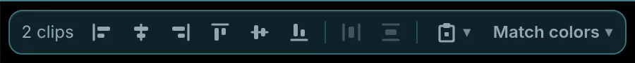
A paste changes what a drag in the Preview would change at the playhead: the clip's starting state, or the keyframe in effect there. A clip it cannot change now stays as it is and a notice names it: one that is not on screen at the playhead, one on a locked track, or one locked after its transformations. A line has no scale, turn or flip of its own: it takes the rest of what is pasted.
Try it
Where to go next
The animations a clip plays are on Animation blocks, and groups of blocks on Groups of animation blocks. The clip's own times in numbers are in the Timing tab of the Animations panel; moving and trimming clips with the mouse is in Working with the timeline.